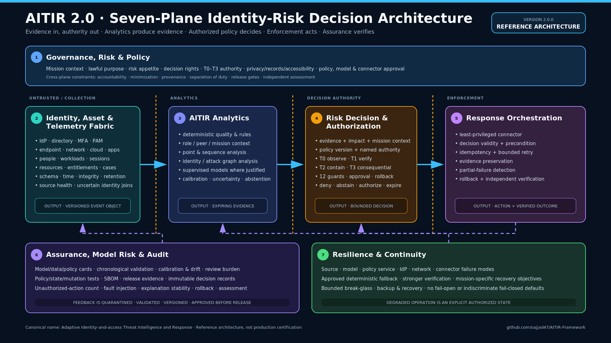

Adaptive Identity-and-access Threat Intelligence and Response
A vendor-neutral architecture for converting identity-centered telemetry into provenance-linked evidence, a bounded policy decision, an authorized response, and independently reviewable assurance.
Author: Md Sazzad Hossain
Affiliation: School of Business and Technology, Emporia State University
ORCID: 0009-0009-4948-1179
Release: 2.0.0 · 5 August 2026
Repository: https://github.com/sajjad47/AITIR-Framework
Identity security decisions combine uncertain telemetry, organizational policy, mission impact, intervention cost, and authority. AITIR 2.0 prevents these concerns from collapsing into one opaque “AI risk score.” It separates events, analytical evidence, policy decisions, enforcement, outcome verification, feedback, and assurance.
| ID | Requirement |
|---|---|
| DR1-DR2 | Named ownership, policy basis, expiration, and separate subject/device/resource/mission context. |
| DR3-DR4 | End-to-end provenance and strict separation of analytics, decision authority, and enforcement privilege. |
| DR5-DR6 | Human authority for consequential action; proportionate, evidence-preserving, reversible response. |
| DR7-DR8 | Quarantined feedback plus purpose, minimization, retention, access, privacy, and contestability. |
| DR9-DR10 | Inventory, integrity, release, rollback, and chronological target-environment evidence for operational claims. |
| Output | Meaning | Not equivalent to |
|---|---|---|
| Anomaly score | Deviation from a reference pattern | maliciousness or probability |
| Risk score | Ordinal/composite prioritization | calibrated probability |
| Probability | Frequency-interpretable estimate after calibration | response authority |
| Uncertainty | Explicitly defined unknown or confidence limitation | one generic confidence value |
| Policy decision | Authorized disposition under approved rules | model recommendation |

| Plane | Primary function | Output |
|---|---|---|
| 1 Governance | risk, lawful purpose, decision rights, approval, oversight | policy and authority |
| 2 Telemetry | identity, asset, event, provenance, quality, health | event object |
| 3 Analytics | rules, anomaly, sequence, graph, classification, fusion | expiring evidence |
| 4 Decision | evidence + impact + policy + authority + guards | deny/abstain/authorize/expire |
| 5 Response | idempotent least-privileged action and case workflow | action and verified outcome |
| 6 Assurance | validation, drift, policy tests, audit, release | assessment evidence |
| 7 Resilience | degraded modes, recovery, bounded break-glass | continuity evidence |
| Object | Minimum properties |
|---|---|
| Event | source, event/ingest time, subject, resource, activity, integrity, quality, purpose, classification, retention |
| Evidence | events, provenance, applicability, score type, calibration, uncertainty, drivers, counter-evidence, expiration, digest |
| Decision | evidence hashes, policy and guards, requested action, T0-T3, authority, safeguards, validity period |
| Action/outcome | decision reference, idempotency, target precondition, connector, evidence preservation, result, compensation |
| Feedback | review evidence, uncertainty, adjudication, quarantine, validation, promotion status |
| Tier | Examples | Authority ceiling |
|---|---|---|
| T0 Observe | enrich, log, watch | preapproved policy |
| T1 Verify | step-up, device check, confirmation | preapproved deterministic playbook with fallback |
| T2 Contain | revoke session, isolate device, temporary suspension | authorized responder or narrow preapproval |
| T3 Consequential | disable identity, alter privilege, block essential service | named human; dual control when required |
Twelve guard categories cover risk basis, freshness, corroboration, approval, separation of duty, rollback, critical targets, blast radius, holds, refresh after failure, aging evidence, and break-glass scope.
| Level | Evidence | Version 2 repository |
|---|---|---|
| L0 Document | architecture, contracts, threat model, governance, limitations | provided |
| L1 Artifact | schema/example/policy/state tests | selected artifacts |
| L2 Controlled pilot | offline replay and shadow/advisory evaluation | not claimed |
| L3 Restricted operations | authorization, narrow controls, monitored rollback | not claimed |
| L4 Operational assurance | sustained evidence and independent reassessment | not claimed |
NIST CSF 2.0RMFSP 800-53/53ASP 800-207SP 800-63-4SP 800-61r3AI RMFCISA ZTMM 2.0MITRE ATT&CKOCSF 1.9STIX/TAXII 2.1CACAO 2.0CAEP/RISC 1.0
Mappings support terminology, outcomes, evidence, or interchange. They do not establish compliance, certification, endorsement, source trust, local relevance, or authority.
Version 2 integrates a seven-plane architecture, calibrated abstention, uncertainty-aware graph remediation, and explicit-state response authority. Four related studies were verified as submitted as of the release cutoff and are not represented as accepted.
The 12-row synthetic example now reconciles identifiers, feature points, tiers, routing, and counts. The distribution is High 3, Medium 8, Low 1. The historical narrative discrepancy is corrected and automatically checked.
Hossain, M. S. (2026). AITIR Framework: Adaptive Identity-and-access Threat Intelligence and Response (Version 2.0.0) [Reference architecture and documentation]. https://github.com/sajjad47/AITIR-Framework
NIST CSF 2.0. https://doi.org/10.6028/NIST.CSWP.29
NIST SP 800-207, Zero Trust Architecture. https://doi.org/10.6028/NIST.SP.800-207
NIST SP 800-63-4, Digital Identity Guidelines. https://doi.org/10.6028/NIST.SP.800-63-4
NIST SP 800-61 Rev. 3, Incident Response. https://doi.org/10.6028/NIST.SP.800-61r3
NIST AI RMF 1.0. https://doi.org/10.6028/NIST.AI.100-1